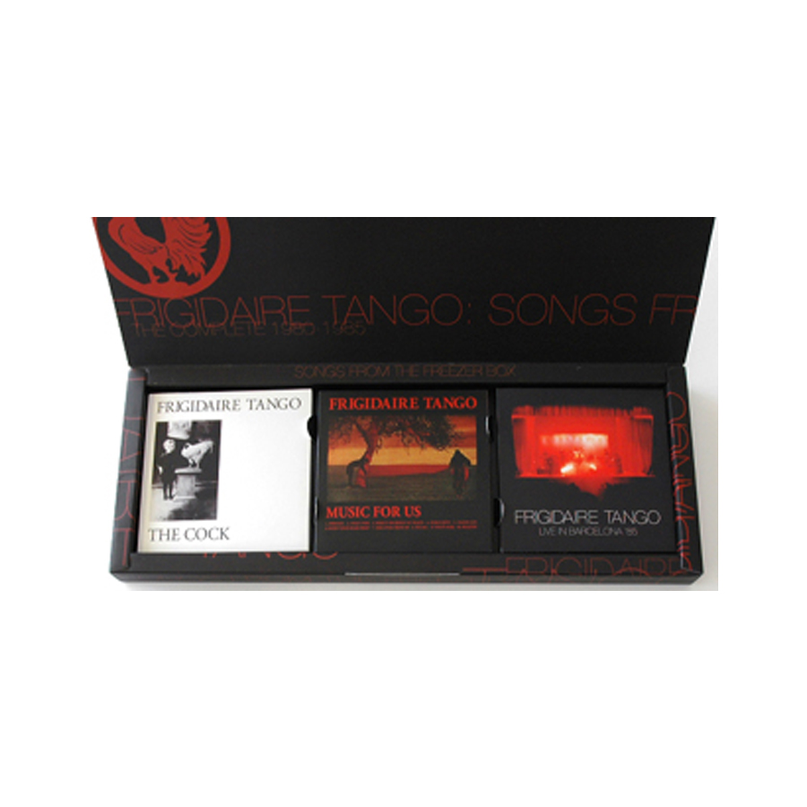

← Music

2006–07
The Freezer Box
The complete 1980–1985 recordings: the debut LP with outtakes, the unreleased second album and a live disc.
BuyDiscogs ↗
Tracklist
CD 1 · The Cock
- 1Dangerous Echo3:13Deezer
- 2Any Time You Dress So Fine2:56Deezer
- 3Blue & Pink5:30Deezer
- 4Push1:49Deezer
- 5A Citizen Came3:30Deezer
- 6I'm Faster4:54Deezer
- 7Black Curtains4:28Deezer
- 8Nothing More1:50Deezer
- 9Tell Me Sometimes2:14Deezer
- 10Brain Rock2:51Deezer
- 11Frigidaire Tango4:40Deezer
- 12Don't Kill Time (outtake)4:46Deezer
- 13This Days '78 (outtake)1:34Deezer
CD 2 · Music for Us
- 1Presage2:52Deezer
- 2Cold Furs3:43Deezer
- 3Shout Yourself To Death5:34Deezer
- 4Insecurity1:57Deezer
- 5Dazed Life4:22Deezer
- 6When Your Head Drop5:16Deezer
- 7Take Over From Me7:13Deezer
- 8Recall6:29Deezer
- 9Vanity Fair4:02Deezer
- 10Healthy1:37Deezer
CD 3 · Live in Barcelona 1985 + extra live songs
- 1Presage (live)3:11Deezer
- 2Cold Furs (live)3:52Deezer
- 3Shout Yourself To Death (live)5:58Deezer
- 4Insecurity (live)2:14Deezer
- 5Dazed Life (live)4:55Deezer
- 6Russian Dolls (live)8:54Deezer
- 7Roxy (live)4:53Deezer
- 8The Cock Medley (live)6:29Deezer
- 9Recall (live)6:00Deezer
- 10Take Over From Me (live)6:14Deezer
- 11Insecurity (live, Virtuosity long version)5:23Deezer
- 12Russian Dolls (live, Infinity version)16:21Deezer
- 13Vanity Fair (live)3:15Deezer
Data: Deezer, Discogs, Rockit and the label pages. Durations may differ between editions.
← Music